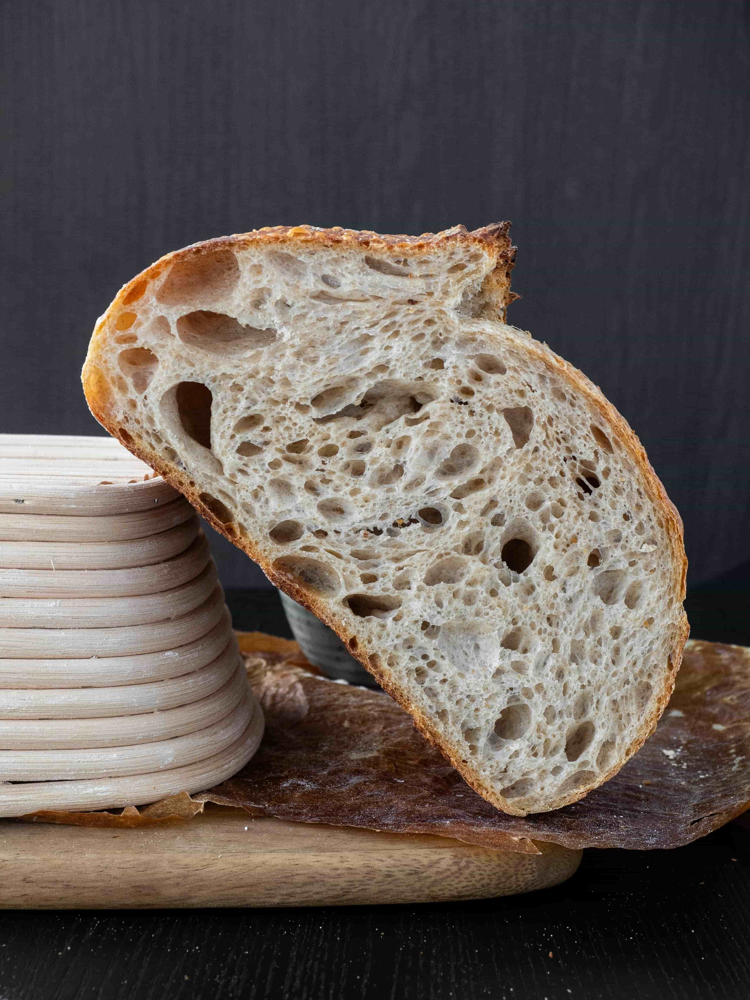
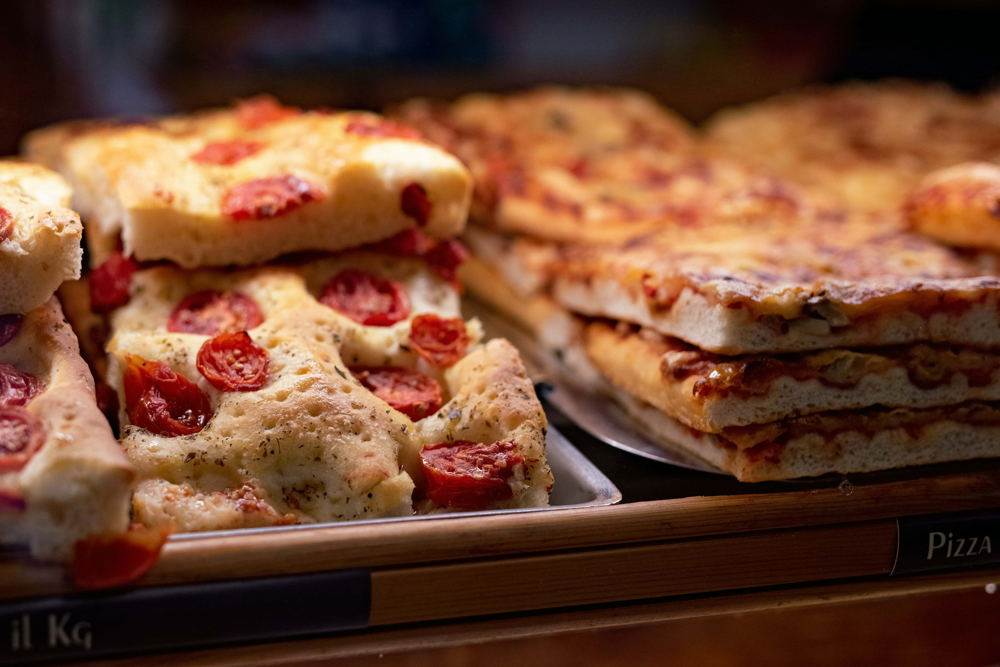

Sobre nós
Na Pão & Tradição, acreditamos que o pão perfeito nasce da união entre o tempo e o afeto.
Missão
Nossa missão é nutrir a nossa comunidade com alimentos artesanais de alta qualidade, transformando ingredientes simples em experiências sensoriais memoráveis. Comprometemo-nos a preservar a arte da panificação tradicional, entregando frescor e sabor em cada detalhe, para que o início do dia de cada cliente seja marcado por bem-estar e acolhimento.
Visão
Aspiramos ser a padaria de referência na região, reconhecida não apenas pela excelência de nossos pães de fermentação natural, mas também pelo nosso impacto positivo na vizinhança. Queremos expandir nossa presença mantendo a alma de negócio local, tornando-nos um símbolo de inovação gastronômica que respeita o tempo e a tradição.
Valores
Pautamos nossa atuação na transparência e no respeito — desde a escolha de produtores locais até o atendimento final ao cliente. Valorizamos a paciência do processo artesanal, a sustentabilidade no uso dos recursos e a paixão pelo que fazemos, acreditando que a ética e o carinho são os ingredientes secretos que tornam nossos produtos únicos.
Nossos produtos
Saiba mais dos nossos principais produtos!
Pão de fermetação natural
Feito apenas com farinha, água, sal e nosso levain cultivado na casa. O resultado é um pão de casca rústica e crocante, com um miolo elástico e aquele sabor levemente ácido que só a fermentação natural de 48 horas proporciona.
Croissant de Manteiga
Esqueça tudo o que você sabe sobre croissants. O nosso leva manteiga de alta qualidade e um processo de dobras manual que cria centenas de folhas finíssimas. Crocante por fora, aerado por dentro e com aquele aroma irresistível que preenche a sala.
Focaccia de Alecrim e Flor de Sal
Massa de altíssima hidratação, coberta com azeite de oliva extra virgem de primeira prensa, alecrim fresco e o toque final da flor de sal. Macia como uma nuvem e dourada na medida certa.
